Основы информационной безопасности - Бекауов А.Т
Российский университет дружбы народов, Москва, Россия
Цель данной лабораторной работы получение практических навыков работы в консоли с атрибутами файлов, закрепление теоретических основ дискреционного разграничения доступа в современных системах с открытым кодом на базе ОС Linuxы
Первым делом создаю в учётную запись пользователя guest с помощью команды sudo useradd guest и введя passwd guest задаю пароль, для созданного пользователя
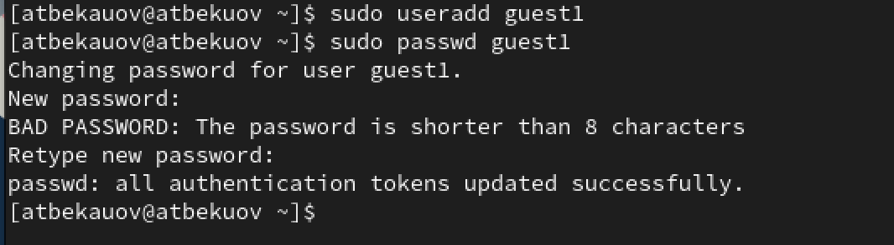
Захожу под пользователем guest и ввожу в терминале команду pwd, чтобы определить нахожусь в домашней директории, затем ввожу whoami, чтобы убедиться, что я в пользователе guest
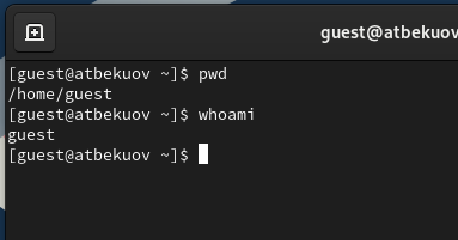
Далее ввожу команду id, получая gid (group id) и uid (user id). Сравниваю их с выводом команды groups и именем пользователя в приглашении командной строки
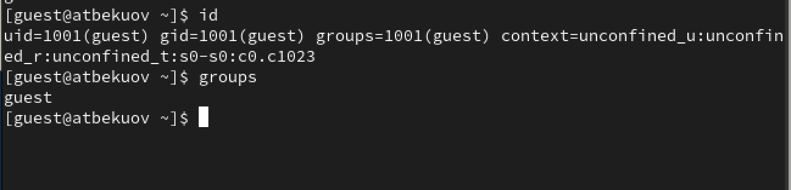
Далее просматриваю файл /etc/passwd командой cat /etc/passwd.
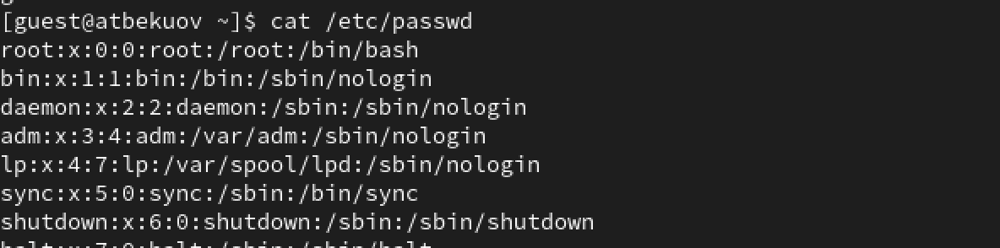
Нахожу там пользователя guest и сравниваю информацию в нём с полученными uid и gid.
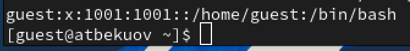
С помощью команды ls -l /home, получаю список поддиректорий каталога /home. Вижу, что права доступа разрешают пользователю запись, чтение и исполнение, а группе и остальным - всё запрещено.
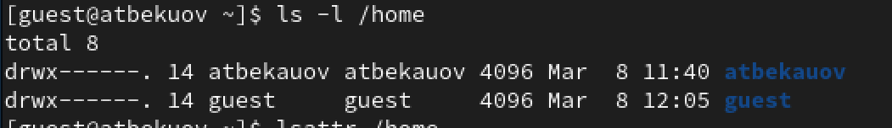
С помощью команды lsattr /home проверю, какие расширенные атрибуты установлены на поддиректориях, находящихся в директории /home.
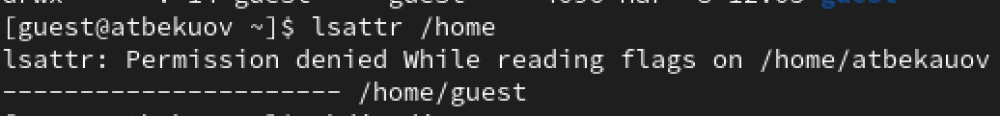
Командой mkdir создаю директорию dir1 в домашнем каталоге guest.
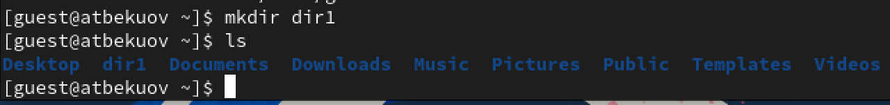
Введя команды ls -l и lsattr, определю права доступа к dir1.
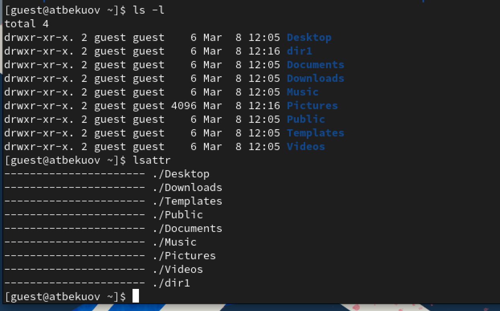
Сниму с директории dir1 все атрибуты командой chmod. Затем проверю изменения введя ls -l
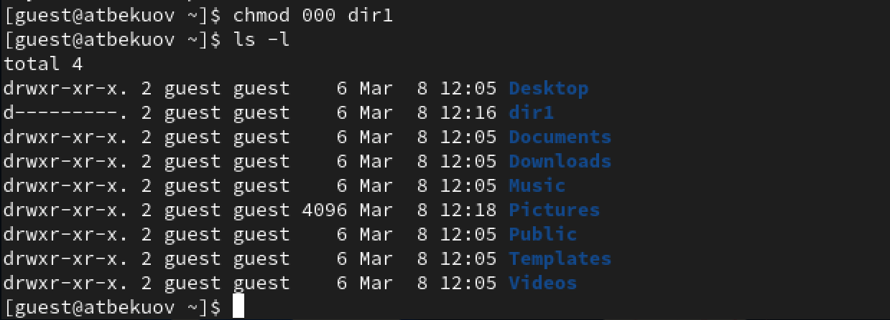
Попытаюсь создать в директории dir1 файл file1. Получаю отказ, если заглянуть внутрь папки dir1, вижу что и файл file1 создан не был.
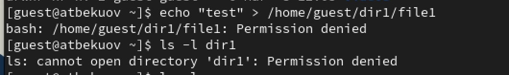
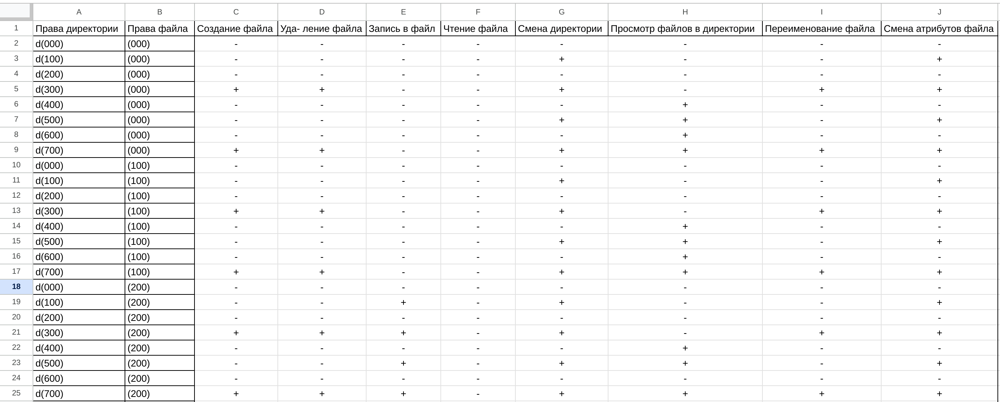
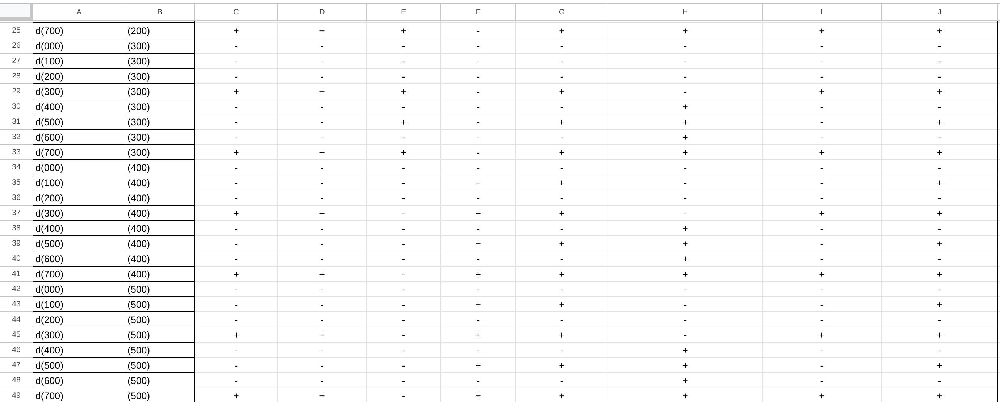
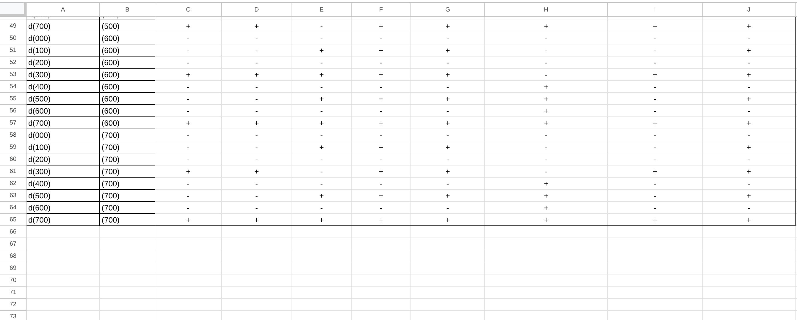
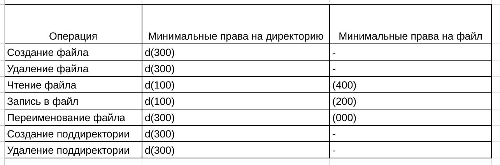
В ходе данной лаботраторной работы я полученил практические навыки работы в консоли с атрибутами файлов, закрепил теоретические основы дискреционного разграничения доступа в современных системах с открытым кодом на базе ОС Linux